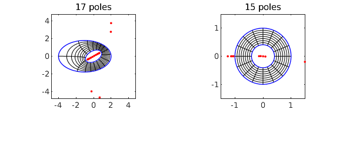
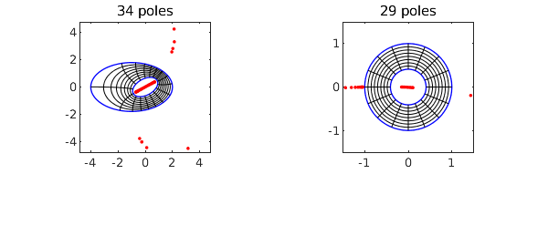

For a couple of years Chebfun has had a command conformal for computing a conformal map of a smooth simply connected region onto the unit disk, and now there is a companion command conformal2 for mapping a smooth doubly-connected region onto a circular annulus. The conformal modulus, which is the ratio of the inner to outer radii of the annulus, is determined in the process.
For example, here we map a region $\Omega$ bounded by two ellipses to the annulus $A_\rho$ with $\rho \approx 0.409705$.
circle = chebfun('exp(1i*pi*t)','trig');
ellipse = real(circle) + .6i*imag(circle);
C1 = 3*ellipse - 1; C2 = exp(.5i)*ellipse;
tic, [f, finv, rho] = conformal2(C1,C2,'plots'); toc
rho
Elapsed time is 2.781155 seconds. rho = 0.409705344001635

Here we do it again but to 12-digit accuracy instead of the default 6 digits:
tic, [f, finv, rho] = conformal2(C1,C2,'plots','tol',1e-12); toc rho
Elapsed time is 9.381164 seconds. rho = 0.409705344001634

As with the simply-connected conformal, the red dots show poles associated with the numerical representations of these maps. The objects f and finv are function handles corresponding to AAA rational approximations of the maps from $\Omega$ to $A_\rho$ and from $A_\rho$ to $\Omega$, respectively. The accuracy in much of the domain is actually better than 12 digits, as we verify by mapping the points $1, i$ back and forth:
z = [1 1i]; finv(f(z))
ans = Column 1 1.000000000000039 - 0.000000000000014i Column 2 0.000000000000007 + 0.999999999999993i
These rational representations are fantastically efficient. We can map a million points back and forth in 1 second.
z = 1 + .1*rand(1e6,1) + .1i*rand(1e6,1); tic, finv(f(z)); toc
Elapsed time is 0.835162 seconds.
Here is a wigglier example.
circle = chebfun('exp(1i*pi*t)','trig');
C1 = circle*chebfun('2+.1*cos(8*pi*t)','trig');
C2 = circle*chebfun('1+.1*cos(5*pi*t)','trig');
tic, [f, finv, rho] = conformal2(C1,C2,'plots'); toc
rho
Elapsed time is 3.361993 seconds. rho = 0.515907564661642
Here is a "hyperellipse" enclosing a disk. Note how we define the hyperellipse via a level curve of a chebfun2.
F = chebfun2(@(x,y) x.^8 + y.^8); C1 = roots(F-.5); C2 = .5*circle; tic, [f, finv, rho] = conformal2(C1,C2,'plots'); toc rho
Elapsed time is 1.833265 seconds. rho = 0.506114112297564
The algorithm used by conformal2 consists of solving a Laplace problem (computing a Green's function) by Laurent expansion with least-squares collocation on the boundary, as described in [2]. A key part of this is the use of Vandermonde with Arnoldi orthogonalization [1], which is available with the Chebfun commands VAorthog and VAeval. (The latter is actually not needed for this application because the AAA rational functions do the evaluation instead.)
Both conformal and conformal2 are restricted in their applicability to smooth domains. As described in [2], related algorithms have been developed for regions with corners, but these are not currently available in Chebfun.
[1] P. D. Brubeck, Y. Nakatsukasa, and L. N. Trefethen, Vandermonde with Arnoldi, SIAM Review 63 (2021), 405-415.
[2] L. N. Trefethen, Numerical conformal mapping with rational functions, Computational Methods and Function Theory (2020), 1-19.